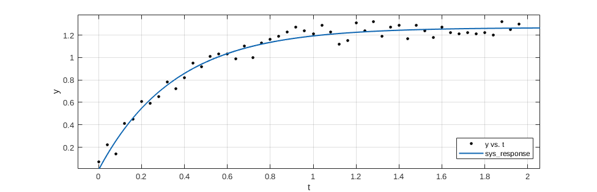
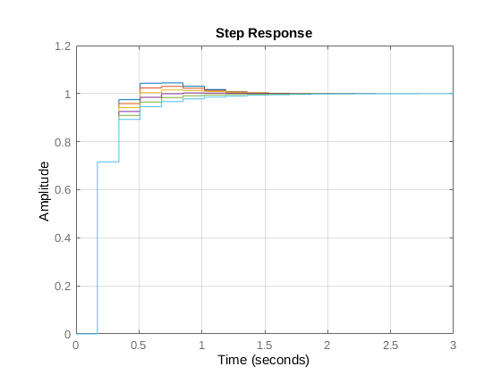
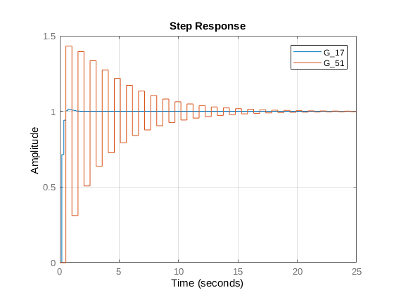

Buka buku dan catatan, menggunakan kalkulator, laptop, MATLAB/Scilab
Soal 1 (nilai 30, mengukur outcome c(30), k(10))
Gunakan Tabel 1 sebagai data identifikasi respon kecepatan motor DC \(y\) terhadap input tegangan \(u\) pada waktu \(t\) untuk menjawab soal berikut:
Gambarkan respon sistem ini. Berdasarkan pengamatan Anda terhadap respon sistem ini, jelaskan tipe respon sistem. Tentukan parameter dinamik sistem ini berdasarkan model pendekatan yang Anda pilih.
Tentukan waktu cacah yang Anda anggap baik untuk merekonstruksi respon sistem ini terhadap input sinyal. Tentukan fungsi transfer diskrit sistem tersebut menggunakan waktu cacah sebesar 3 kali waktu cacah yang Anda pilih.
Untuk sistem dengan waktu cacah lebih kecil pada no. 1.b, rancanglah pengontrol proporsional--integral diskrit menggunakan metode yang sistematik. Uraikan metode yang Anda pilih.
Hubungkan pengontrol tersebut dengan masing-masing fungsi transfer diskrit pada kalang tertutup. Bandingkan dan jelaskan secara kuantitatif kinerja kedua kalang tertutup tersebut.
Dilarang menggunakan toolbox Autotune dan sejenisnya pada MATLAB
Tentukan fungsi transfer kalang terbuka kontinu dari diagram blok di Gambar 1 yang meliputi aktuator, plant, dan sensor, dengan \(a\) adalah angka terakhir NIM Anda.
Tentukan respon sistem kalang terbuka terhadap sinyal unit step pada kondisi tanpa pengontrol. Uraikan kualitas respon sistem ini berdasarkan bentuk respon yang Anda amati.
Pilihlah waktu cacah yang cocok untuk sistem ini. Uraikan alasan pemilihan waktu cacah Anda.
Lakukan diskritisasi terhadap fungsi transfer kalang berdasarkan waktu cacah yang Anda pilih.
Rancang parameter kontrol proporsional--integral analog dengan cara sistematik untuk sistem kalang tertutup agar respon terhadap sinyal referensi unit step mengandung overshoot lebih kecil dari 10% pada settling time yang sama dengan sistem analognya.
Tunjukkan dan bandingkan secara kuantitatif kinerja respon waktu sistem kalang terbuka terhadap sistem kalang tertutupnya.
Solusi 1
Akan digunakan pendekatan orde satu (tanpa waktu tunda, sesuai tren pada data),
Dengan menggunakan toolbox Curve Fitting pada MATLAB1 diperoleh nilai parameter dinamik sistem
\[K = 1.267 \text{ dan } \tau = 0.3535.\]
dan waktu tunda \(t_d= 0\). Fungsi transfer sistem ini adalah
\[Y(s) = \frac{1.267}{0.3535s + 1}.\]
Sistem ini berada dalam keadaan underdamped.

Dengan menggunakan perintah Gs = tf(1.267, [0.3535 1]); damp(G) diperoleh nilai frekuensi sistem \(\omega_n = 2.83 \text{ Hz}\). Sesuai dengan teorema Nyquist-Shannon, Frekuensi pencacahan harus sekurang-kurangnya \(2\omega_n = 5.66 \text{ Hz}\), atau \(T_s = 0.1767 \text{ s}\). Sebagai batas aman, akan diambil \(T_s = 0.17 \text{ s}\).
Dengan menggunakan perintah Gz = c2d(Gs, Ts), diperoleh fungsi transfer diskrit untuk \(T_s = 0.17 \text{ s}\) dan \(T_s = 3\cdot0.17 = 0.51 \text{ s}\) adalah
Akan dirancang pengontrol PI menggunakan metode Lamda Tuning. Pertama, dicari nilai \(K_p\) yang menghasilkan respon overshoot yang dapat diterima (\(<10\%\)). Kemudian, dengan menggunakan nilai \(K_p\) tersebut, dicari nilai \(K_i\) yang menghasilkan respon terbaik (waktu respon tercepat dengan overshoot yang mendekati nol). Untuk mempermudah tuning, digunakan skrip MATLAB berikut.
Ts = 0.17;
Gs = tf(0.4837, [1 -0.6182], Ts);
for i=1:0.2:2
Kp = i; Ki = 0;
Gc = Kp + Ki*Ts*tf(1, [1 -1], 0.17);
G = Gc*Gs/(1+Gc*Gs);
step(G); hold on;
end

Skrip tersebut akan menghasilkan grafik yang dapat dibandingkan secara visual (seperti gambar di atas). Untuk menala \(K_i\), ganti nilai \(K_p\) dengan nilai yang telah ditemukan dan Ki = i;, serta sesuaikan range i. Dengan cara ini, diperoleh nilai
\[K_p = 1.48 \\ K_i = 3.6\]
Dengan menghubungkan pengontrol PI dengan parameter di atas dengan sistem pada \(T_s = 0.17 \text{ s}\) dan \(T_s = 0.51 \text{ s}\) diperoleh respon step seperti gambar di bawah.

Untuk \(T_s = 0.17 \text{ s}\), respon kuantitatif sistem adalah \(t_r = 0.17 \text{ s}\), \(overshoot = 2\%\), \(t_s = 0.68 \text{ s}\), \(SP = 1\). Untuk \(T_s = 0.51 \text{ s}\), respon kuantitatif sistem adalah \(t_r = 0.51 \text{ s}\), \(overshoot = 43\%\), \(t_s = 13.8 \text{ s}\), \(SP = 1\).
Sistem dengan waktu cacah 0.51 s merespon dengan sangat lambat dan mengalami osilasi yang besar karena memiliki waktu cacah yang lambat (tidak memenuhi frekuensi Nyquist) dan tidak didesain dengan pengontrol yang sesuai.
Pengontrol telah memperbaiki respon sistem pada waktu cacah 0.17 s, dengan menghilangkan steady-state error dan memperpendek waktu respon dan waktu tunak sistem.